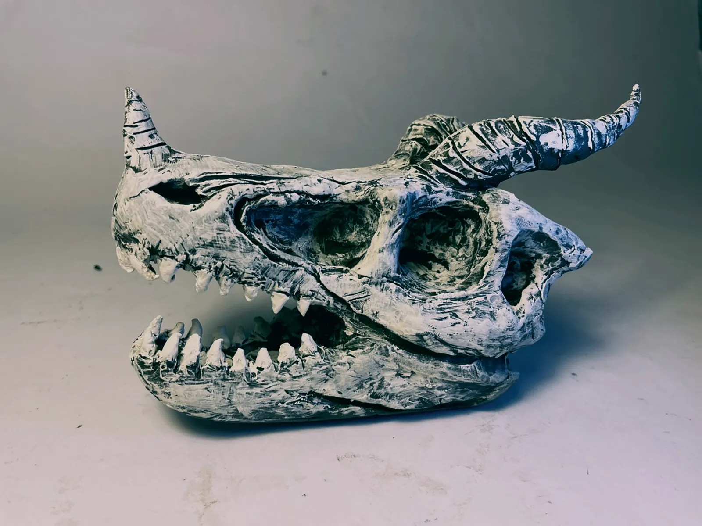
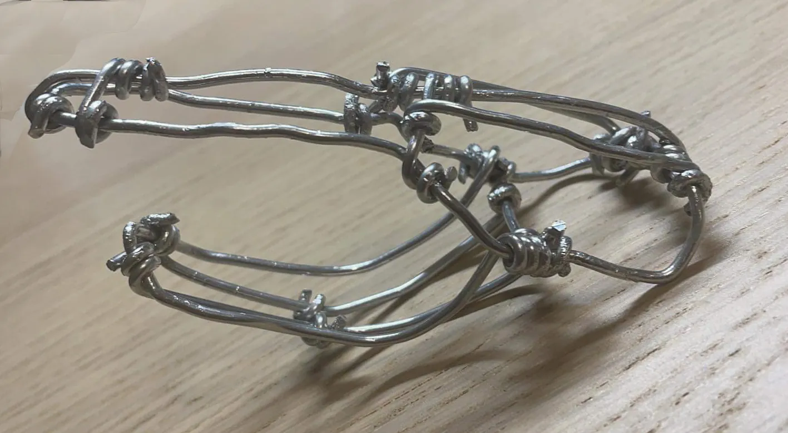
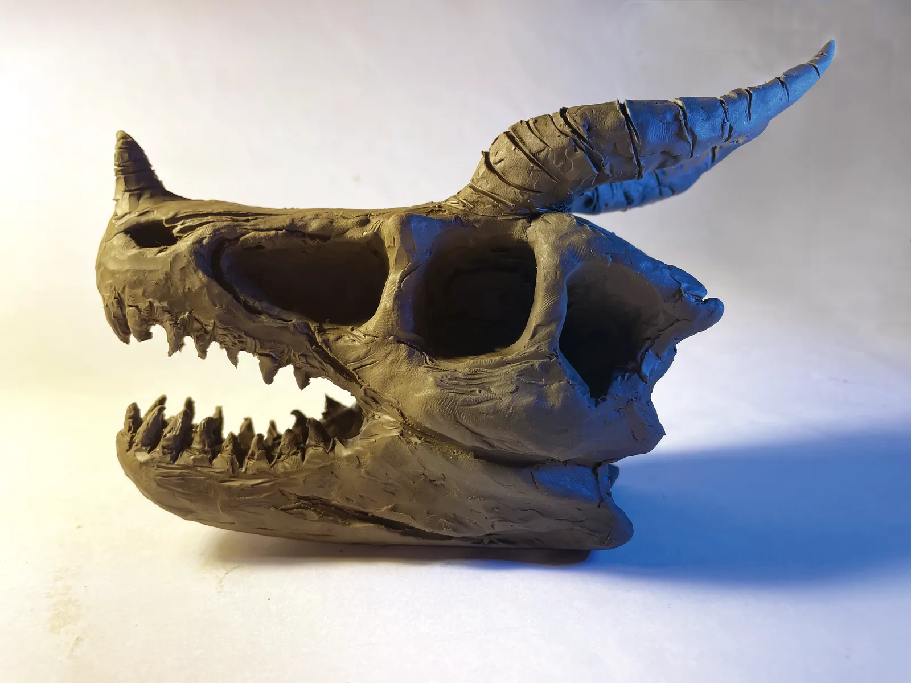
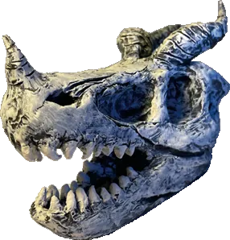

Art
Dragon Skull 龍頭骨
My first three-dimensional piece, made in a studio because I like dragons. The armature is bent from wire, wrapped in clay and painted — and the first time I set myself a challenge in three dimensions. 這是我第一個在畫室製作的 3D 作品,因為對龍有很大的興趣, 其骨架是用鐵絲去拉,再包住黏土上色,也是第一次給自己做立體作品的挑戰。
- Type
- Art — three-dimensional
- Material
- Wire armature, clay, paint — 鐵絲、黏土、上色

01
Armature 鐵絲骨架
It starts as wire — bent, tied, and stood up on the desk before any clay goes on. Everything after this is thickness. 先用鐵絲把形狀拉出來、綁好、立在桌上,黏土是之後的事。

02
Finish 成品


這顆頭骨也是這個網站本身 —— 首頁載入時聚攏成形的那幾千片碎片,取樣的就是它。 The fragments on this site are this object.